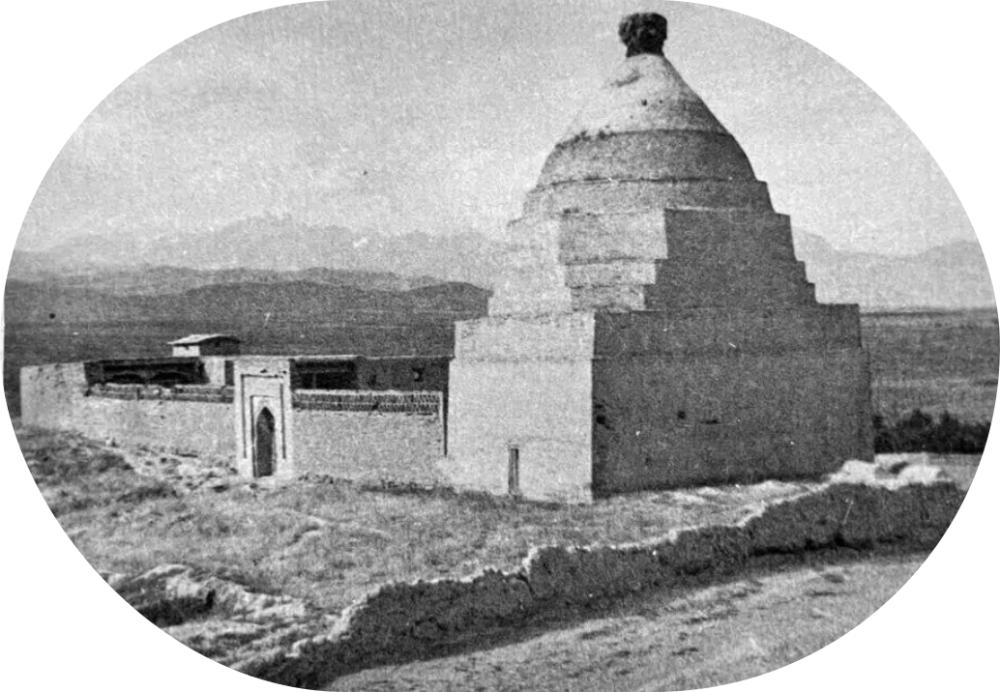
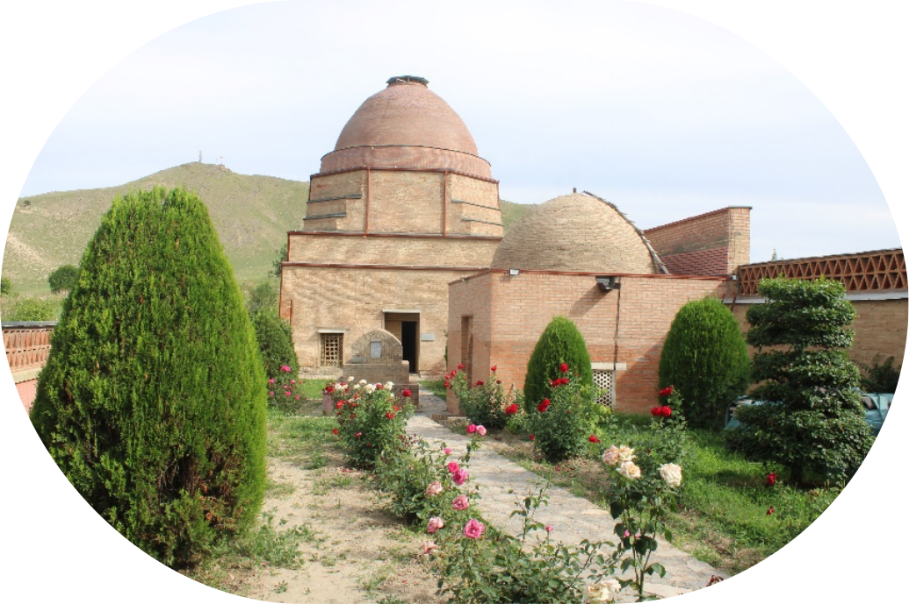
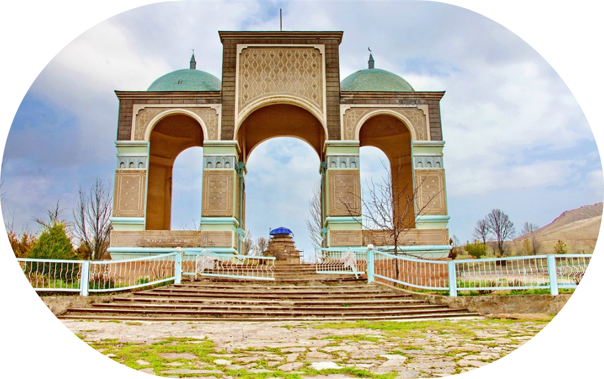

Шах - Фазиль
Мавзолей Шах-Фазиль: история создания
Мавзолей Шах-Фазиль — одна из самых значимых историко-архитектурных памятников Кыргызстана, расположенный в селе Гулистан Джалал-Абадской области. Это древнее сооружение не только привлекает внимание своей архитектурой, но и связано с легендами и историческими событиями, которые делают его важной частью культурного наследия региона.
Историческое происхождение
Постройка комплекса связана с легендой о походе в эти края арабов во главе с Шах-Джариром – внуком пророка Мухаммада – для насаждения ислама. Неверные напали на мусульман во время молитвы и отрубили им головы. Темнокожая невеста Шах-Джарира Сафед-Булон была героиней, похоронившей всех павших. Аллах благословил ее, и она посветлела. Ее так стали называть – Сафед-Булон – Белая женщина.
Дело Шах-Джарира продолжил его сын – Шах-Фазиль. Он наказал неверных и продолжил насаждать свою религию в этих краях.
Мавзолей был построен в XI–XII веках, во времена Караханидов, правивших на территории Средней Азии. Он стал местом захоронения Шах-Фазиля, которого местные жители почитали как святого воина, погибшего в битве за веру. Считается, что он защищал эти земли от врагов и пал в неравном бою.
Существует также версия, что мавзолей был построен в честь Сафед-Булона, исламского проповедника, принесшего ислам в этот регион. Это объясняет, почему рядом с мавзолеем находятся другие святые места, привлекающие паломников.
Архитектурные особенности
Мавзолей выполнен из жженого кирпича и имеет прямоугольную форму с куполообразным сводом. Главный фасад украшен геометрическими узорами и резьбой, характерной для исламской архитектуры. Внутри можно увидеть надписи на арабском языке, а также следы древней росписи.
Вокруг мавзолея расположены другие архитектурные памятники, включая некрополь и древние захоронения, что делает этот комплекс важным историческим местом.
Сооружение сохранилось до наших дней практически в неизменном виде, несмотря на землетрясения и другие природные катаклизмы. Его реставрация проводилась с осторожностью, чтобы сохранить историческую аутентичность.
Культурное значение
Сегодня мавзолей Шах-Фазиль является не только объектом исторического наследия, но и местом паломничества. Весь комплекс является мусульманской святыней – местом поклонения многих паломников. Сюда приезжают люди, чтобы почтить память святого, попросить благословения и просто насладиться величием древней архитектуры.
Согласно преданиям, посещение мавзолея способствует очищению души и исполнению желаний. Ежегодно сюда стекаются верующие и туристы, изучающие культуру и традиции региона. Этот памятник напоминает о богатой истории региона, его духовном наследии и значимости культурного обмена в Средней Азии.
Точное местоположение:
Координаты: 40.7700° N, 73.2986° E
Время в пути от Бишкека на автомобиле: около 8–9 часов (примерно 600 км).
Можно долететь до Оша (около 1 часа), а затем доехать до Узгена (55 км, около 1 часа на машине).